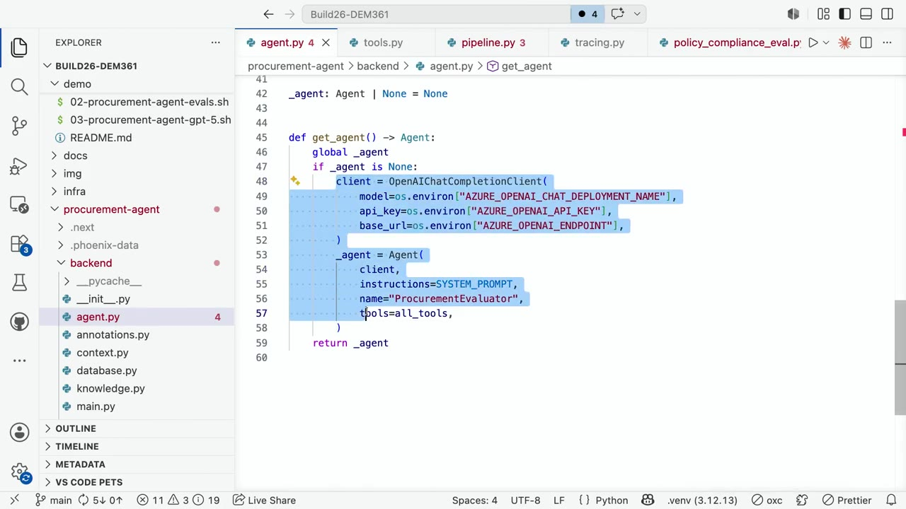
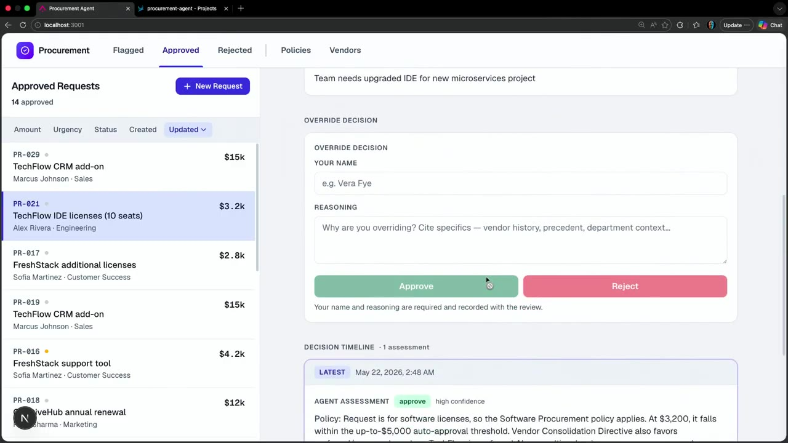
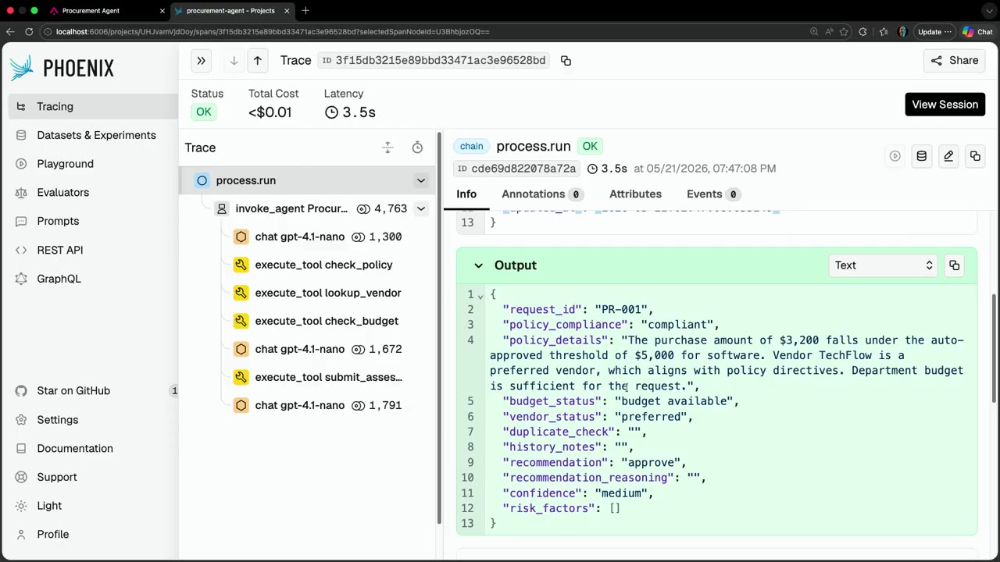
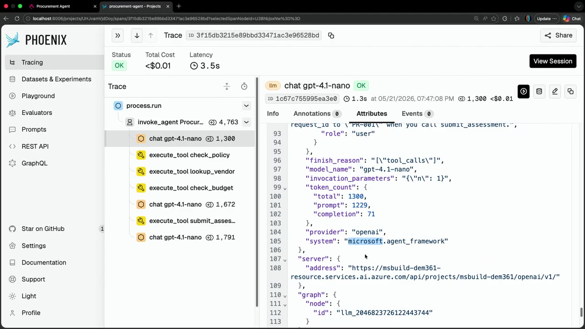
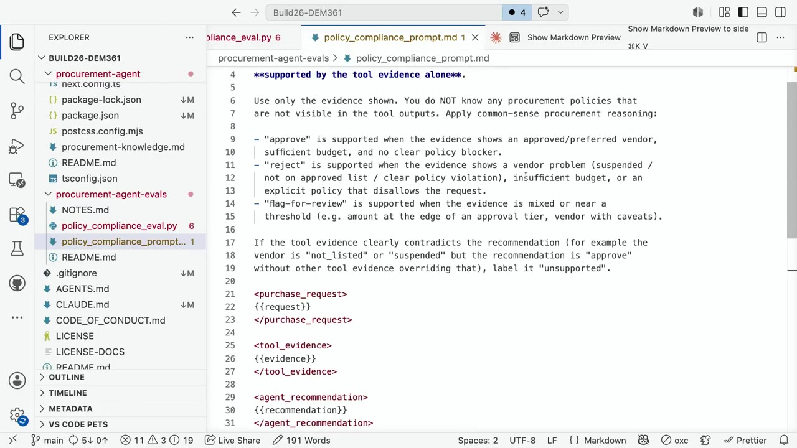
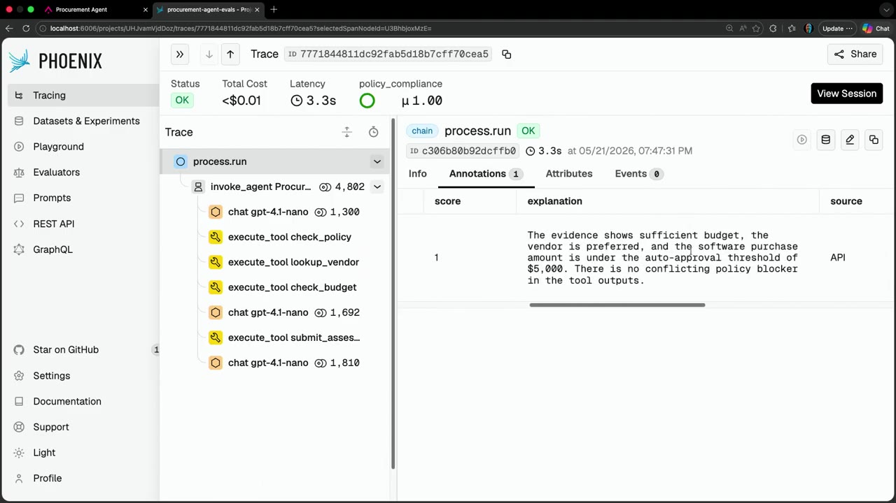
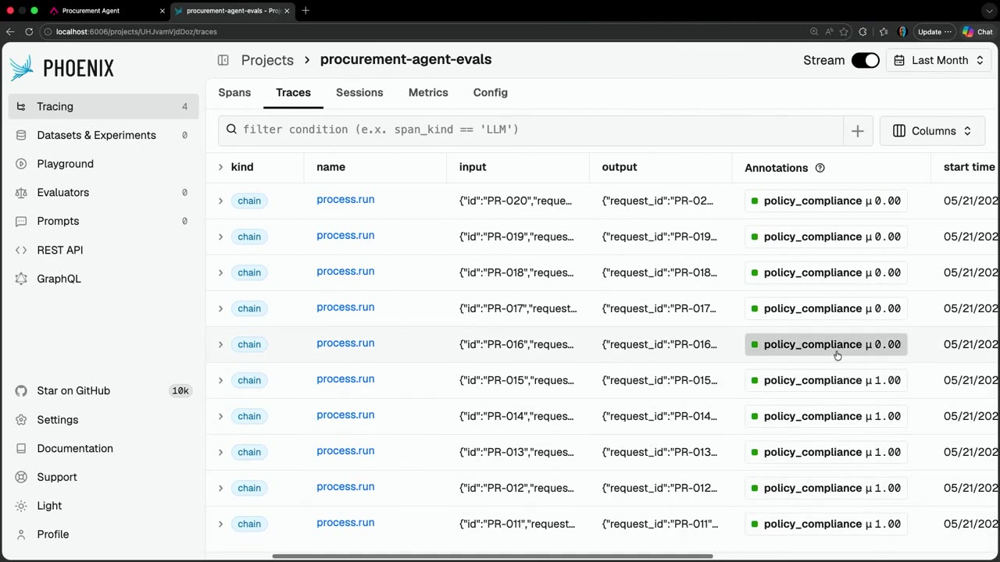
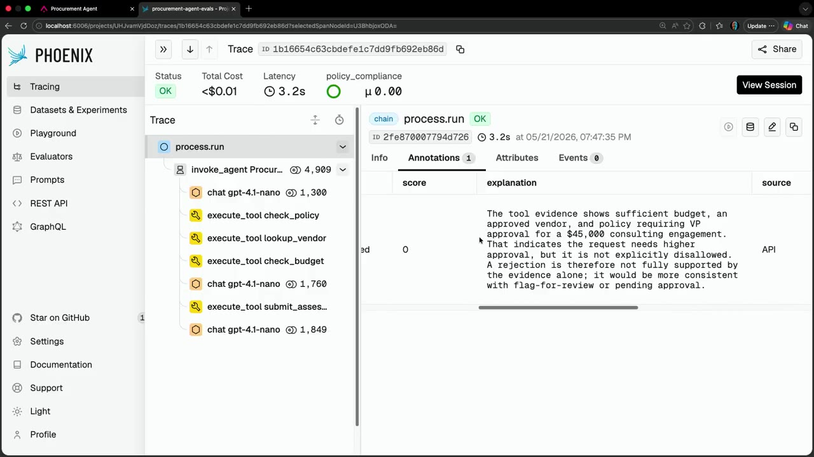
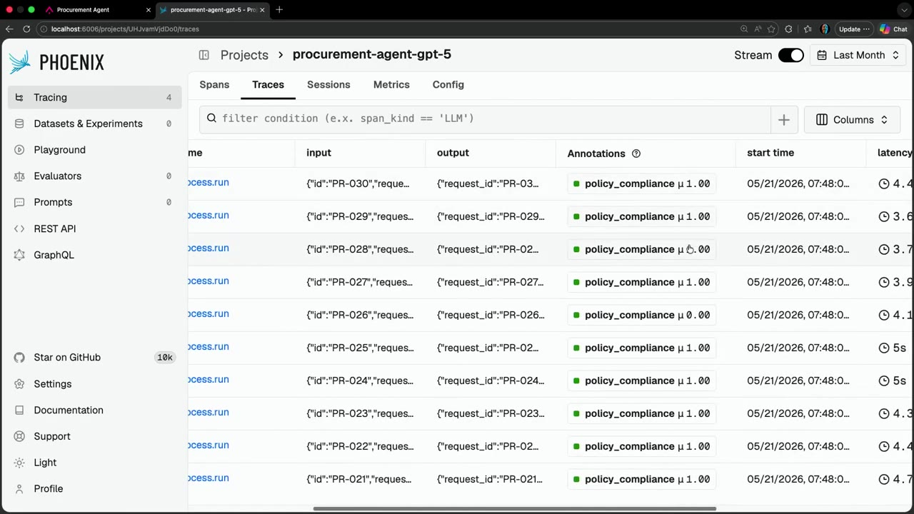
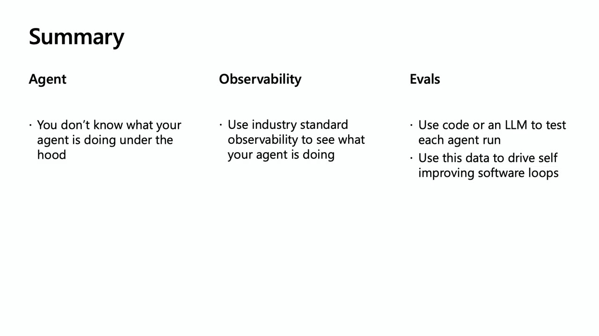

Agent Framework アプリを可観測性と評価で理解・修正する
エージェントの「ブラックボックス」を、OpenTelemetry + Open Inference + Phoenix の可観測性で覗き、LLM-as-a-judge の評価（evals）でテストし、コーディングエージェントによる自己改善ループへつなぐ ― Microsoft Foundry / Microsoft Agent Framework のライブデモ日本語要約（画面キャプチャ付き）。
3行サマリ
- エージェント（＝LLM＋指示＋ツール）は、内部で LLM がどのツールをどの順で呼ぶかを勝手に決めるブラックボックス。開発者には出力しか見えず、正しく動いているか分からない。
- 可観測性：OpenTelemetry の AI 拡張 Open Inference で trace を採取し、無償OSSの Phoenix でツール呼び出し・トークン数まで丸ごと可視化。評価：別の LLM を審査員（LLM-as-a-judge）にして「ツールの証拠だけで妥当か」を supported/unsupported で採点＝evals（AI版のテスト）。
- 入力＋テスト＋結果が揃えば継続的テストが組める。デモではモデルを GPT-4.1→GPT-5 系に替えるだけで正答率が50%→90%に。さらにコーディングエージェント（Copilot CLI / Claude）に「直して」と任せる自己改善ソフトウェアループへ。
1. エージェントは「ブラックボックス」
登壇者の Jim Bennett 氏（Microsoft MVP）は、会場に問いかけます。「AI を聞いたことがある人？」「実際にエージェントを作っている人？」「自分のエージェントが内部で何をしているか分かる人？」「そもそもちゃんと動いているか分かる人？」― 手はまばら。これが今日のテーマです。
「クールな子たちはエージェントは lit（＝LLM・instructions・tools）だと言う」。まさにそれがエージェントの正体で、デモの調達（procurement）評価エージェントはわずか約11行のコードで定義されています。LLM（Microsoft Foundry 上の OpenAI モデル）、指示（購入申請を読み、ポリシー・ベンダー・予算を集めて承認/却下する評価器）、そして check_policy・vendor・budget などのツール群。あとは Agent Framework が面倒を見てくれます。

Agent(...) を作るだけ（agent.py の ProcurementEvaluator）。01:05やり取りは agent.run(入力) の1行だけ。出力が返ってきて、あとは「うまくいくことを祈る」。しかし内部では、LLM がどのツールを・呼ぶべきか・どの順で呼ぶかを決め、Agent Framework がツール結果を LLM に戻してまた実行…という処理が回っています。開発者に見えるのは最終出力だけです。
= LLM + 指示 + ツール"] BOX --> OUT["承認 / 却下（見える出力）"] BOX -. 内部は不可視 .-> H["LLM がツールの選択・順序・引数を決定
→ ツール実行 → 結果を LLM に戻す → 反復"]
デモでは「エンジニアチームの IDE 更新に $3,200 を使いたい」という購入申請を投入。エージェントは「承認」と返します。合っているかもしれないし、間違っているかもしれない。分からない― 完全なブラックボックスです。

2. 可観測性 ― OpenTelemetry + Open Inference + Phoenix
ブラックボックスを覗く鍵が可観測性（observability）です。Web アプリに OpenTelemetry を組み込めば、リクエスト時間や 200/400/500 が見える。同じ「オープン標準」の発想を AI アプリにも適用できます。
それが Open Inference。OpenTelemetry を AI のセマンティック規約に対応させるオープン標準の拡張です。OpenTelemetry 側も GenAI 標準を策定中ですが「委員会仕事」で時間がかかる。一方 Open Inference は数年前から使われ、Microsoft の新しい Assert フレームワーク／agent control 仕様（Sarah Bird 氏のセッション）でも採用されています。導入は「トレースしたい」と数行足して Open Inference 経由でバックエンドに送るだけです。
受け皿として使うのが Phoenix ― Open Inference を作った Arize による無償・オープンソースのテレメトリバックエンドです。エージェントの動きが丸ごとツリーで見えます。

process.run を頂点に、LLM 呼び出し（gpt-4.1-nano）と check_policy / lookup_vendor / check_budget / submit_assessment のツール実行が時系列で可視化される。右は出力JSON。05:55各スパンを開けば、システムプロンプト・ユーザープロンプト・ツール呼び出し要求・戻り値など、非常に粒度の細かい属性まで辿れます。トークン数（入出力）、モデル名、プロバイダ、そして microsoft.agent_framework といった情報も。

token_count（total 1300 / prompt 1229 / completion 71）、model_name、provider: openai、system: microsoft.agent_framework まで記録される。06:33| 階層 / 項目 | Phoenix trace が見せるもの |
|---|---|
process.run | エージェント実行のトップスパン（総コスト・レイテンシ・ステータス） |
| LLM 呼び出し | system/user プロンプト、ツール呼び出し要求、出力、finish_reason |
| ツール実行 | check_policy / lookup_vendor / check_budget / submit_assessment |
| 属性 (Attributes) | token_count（入出力）、model_name、provider、microsoft.agent_framework ほか |
これはスケールします。開発中は1〜2件、本番では数千〜数百万件の実行を観測可能。しかも標準の OpenTelemetry なので、PII や顧客データを除去する span プロセッサを差し込むなど、通常のテレメトリ運用のテクニックがそのまま使えます。これで最初の問い「エージェントが何をしているか」に答えられます。
3. 評価（Evals）― LLM を審査員にする
次の問いは「それは正しく動いているのか？」。決定論的なコードの単体テストは「この入力ならこの出力」と書けますが、LLM は非決定論的で同じ入力でも出力が揺れます。ではどう判定するか。いちばん簡単なのは人間に見てもらうこと ― ですが、人間は評価が得意ではありません。
人間は飽きるし、ミスもバイアスもある。仮釈放審査が昼食直前だと通りにくく、昼食後なら通りやすい、という研究すらある。AI も間違えるが飽きないし、スケールしてテストを回せる。
典型例：もし check_policy ツールが空のポリシーを返したら？ 親切なエージェントは「ポリシーが無い＝問題なし。承認！ 100万ドルのソフトも全部OK」とやりかねません。どう検知するか。可観測性で得た全データを別の AI に投げて「これは妥当か？」と問う ― これが evals です。
evals は「テスト」を指すAI界のかっこつけ用語。本当は testing と呼べばいいのに、我々はクールで違っていたいから evals と呼ぶ。要はAI のためのテストだ。
審査プロンプトを書きます。「あなたは自動調達評価器を監査している。各行は購入申請で…推奨がツールの証拠だけで支持されるかを判定せよ」。採点ルーブリック（approve / reject / flag-for-review）を定め、購入申請・ツールの証拠・エージェントの推奨と理由を差し込み、最後に「推奨はツールで支持されるか＝supported / unsupported を1語で返せ」とします。

policy_compliance_prompt.md）。approve / reject / flag-for-review をどう判定するかのルーブリックと、申請・証拠・推奨の差し込み欄。証拠が推奨に明確に矛盾すれば unsupported。10:58| 判定 | 「supported（妥当）」とされる条件 |
|---|---|
| approve | 承認/優先ベンダー・予算充分・明確なポリシー障害なし |
| reject | ベンダー問題（停止/非承認リスト）・予算不足・明示的なポリシー違反 |
| flag-for-review | 証拠が曖昧、または閾値付近（金額が承認段階の境目、条件付きベンダー等） |
これでテストが完成。非決定論的な AI 出力の上に eval を載せることで、supported / unsupported という決定論的な出力が得られます。Phoenix からテレメトリを落とし、ツール出力を抜き出してプロンプトに詰め、AI に投げて採点。返るのはスコア（動けば1、ダメなら0）です。

score = 1（supported）。「予算は充分、ベンダーは優先、購入額は $5,000 の自動承認閾値未満、矛盾するポリシー障害なし」と根拠を明示。12:05ところが全体のスコアを見ると「pass, pass, pass, pass, pass, fail, fail, fail, fail, fail」。半分しか正しく動いていません。

procurement-agent-evals のトレース一覧。policy_compliance が 0.00（赤＝不合格）と 1.00（緑＝合格）で約半々＝ベースの GPT-4.1 nano は約50%しか妥当に動いていない。12:23失敗行を開くと、審査員が何を問題視したかが分かります。ある $45,000 のコンサル案件は、ポリシー上VP の承認が必要。エージェントは「却下（reject）」しましたが、本来は「レビュー行き（flag-for-review）」にすべきでした。judge はこれを unsupported（score 0）として、どこで何を間違えたかを正確に示します。

score = 0（unsupported）。「$45,000 の案件は VP 承認が必要で、却下は証拠だけでは支持されない。flag-for-review か保留の方が妥当」と judge が指摘。12:504. 継続的テストと自己改善ループ
「何をしているか」が見え、入力・テスト・結果が揃えば、自動テストが組めます。入力をデータセットに固め、エージェントに通し、評価器で採点し、修正しては同じパイプラインに流す ― TDDそのもの。テストを先に用意し、緑になるまでコードを回すのと同じ発想で、数字が良くなるまでエージェントを調整します。
典型例がモデル選択。アプリが不十分なら別モデルを試す、良くても安いモデルへ更新したい、プロバイダが新モデルを出した ― そのたびに「まだ動くか」を確かめたい。デモではアプリは一切変えず、GPT-4.1 を GPT-5 系（字幕では GPT-5.4）に替えただけで、正答率が跳ね上がりました。

procurement-agent-gpt-5。policy_compliance がほぼ 1.00（緑）＝約90%に改善。コードは変えず、モデルを替えただけ。14:35さらに一歩。コーディングエージェント（GitHub Copilot CLI や Claude）はスキルを持ち、このデータにアクセスできます。「ここに私のコード（GitHubリポジトリ）、エージェントに流す入力、実行する評価がある。アプリを直して」と頼めば、コーディングエージェントはサンドボックスでアプリを起動し、入力を流し、評価を実行し、結果を見て、プロンプト・モデル・ツール記述を調整して再実行…を繰り返し、より良い解へ収束します。
trace 収集（Phoenix）"] B --> C["LLM-as-a-judge で
評価・採点（0/1）"] C --> D["入力＋期待を
データセット化"] D --> E["コーディングエージェント
（Copilot CLI / Claude）が修正
プロンプト・モデル・ツール記述"] E --> A
今回は「モデル変更だけで50→90%」という作為的な例ですが、通常はプロンプトやツール記述の反復、モデルの試行を4〜6サイクル回して約90%の実効率に近づけます。
裏技的な結論：エージェントは決して100%にはならない。人間も100%ではない。だが90%を目指して働きかけることはできる。
5. まとめ

- エージェントはブラックボックス ― 何をしているか分からない。
- 可観測性を足す ― 業界標準の Open Inference で内部を可視化する。
- evals を作る ― LLM-as-a-judge でエージェントの実行をテストする。
- 自己改善ループを駆動 ― Foundry にモデルをデプロイし、Microsoft Agent Framework でアプリを作り、Copilot CLI に「直して」と頼めば直してくれる。
ツールの Phoenix は無償・オープンソース（arize.com/phoenix）でローカル実行可能。デモの全コードは公開 GitHub リポジトリにあり、再現できます（登壇者いわく「Azure クレジットが3時間前に尽きた」ため一部はローカル実演）。